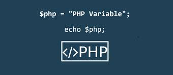

¿Para que se utiliza el bucle FOR?
El bucle FOR se utiliza para repetir una o más instrucciones un determinado número de veces.
Conclusiones
El bucle for es muy sencillo de utilizar, tiene 3 partes incluidas en el parentesis,
que nos sirven para definir cómo deseamos que se realicen las repeticiones.
La primera parte es la inicialización, La segunda parte es la condición, que se evaluará
cada vez que comience una iteración del bucle. Por último tenemos la actualización,
que sirve para indicar los cambios que queramos ejecutar en las variables cada vez que
termina la iteración del bucle.
P2 preguntas y Respuestas
¿Cómo declaramos una variable?
Para declarar un nombre de variable válido.
Se declara anteponiendo el signo $ seguido del nombre de la variable igualandolo a un
numero finalizando con punto y coma.
¿Importan las mayusculas y minusculas en la declaracion de las variables?
Si importan las mayusculas y minuculas ya que cuando declaro una variable y luego
la uso para imprimirla o hacer alguna operacion debe ser indicada de las misma forma.
Conclusiones
Como conclusion nuestra variable puede comenzar con una letra pero nunca por un numero,
si no escribimos exactamente como es nuestra variable podria no identificarla en el resto
del codigo.

P3 preguntas y Respuestas
¿Que es el bucle WHILE?
Crea un bucle que ejecuta una sentencia especificada mientras cierta
condición se evalúe como verdadera. ¿Como funciona el while?
Una expresión que se evalúa antes de cada paso del bucle. Si esta
condición se evalúa como verdadera, se ejecuta sentencia. Cuando la
condición se evalúa como false, la ejecución continúa con la sentencia
posterior al bucle while.
Conclusiones
Las estructuras de repetición son utilizadas para repetir un proceso
las veces que sea necesario en un determinado programa.
While es una de las más utilizadas en este proceso , ya que su estructura
es simple y fácil de implementar.